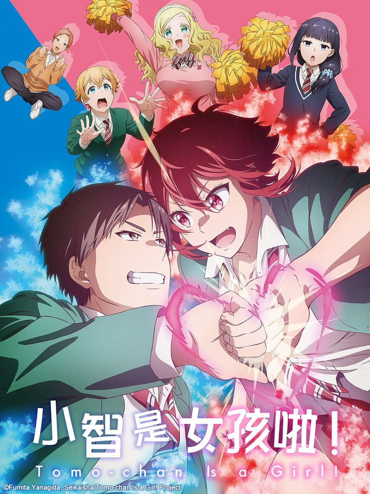

小智是女孩啦!
故事簡介:
女高中生相澤智對自己的青梅竹馬久保田淳一郎說出「我喜歡你！」的表白，對方卻以為是「摯友」的宣言，
「充滿男子氣概」的女孩子想被喜歡的人「當成女生」看待，結果總是加深兩人的男女友情，環繞兩人的戀愛四格喜劇。
角色介紹
- 相澤智
- 本作女主角，短紅頭髮、身高在女生當中很高，平常穿學生制服時會穿打底褲。
- 從小在父親的道場中鍛練，體能強過大多數的男生，運動萬能。在學校空手道社中
- 因其實力太強、太可怕而沒同齡女生敢對練而編進男生部，但就算在男子部其依然沒有對手。
- 喜歡青梅竹馬久保田淳一郎，上高中後向淳一郎告白，卻被對方以為是好朋友之間的喜歡，
- 之後便努力的學習讓自己更有女人味一點，不過兩人的關係仍極為親密。
- 最後淳一郎終於知曉自己的心意，兩人順利交往。
- 久保田淳一郎

- 本作男主角，與小智是青梅竹馬兼鄰居，沒意識到他對小智的情感一直當她是摯友。
- 小時候被欺負，小智幫助了他，因此下定決心要變強而在小智父親家的道館訓練。
- 在中學前都以為智是男生，直到中學看到智穿著女生制服才發現智是女孩子，
- 內心因此動搖，有一年的時間不敢跟智講話。
- 因為過去不當智是女生，所以跟智做出男生間的身體接觸而常被挨揍。
- 後來正視自己的情感，挑戰小智父親成功後與小智正式交往。
- 群堂美玲
- 智和淳一郎的青梅竹馬，但和淳一郎關係惡劣。有著極其腹黑的個性，有時會露
- 出邪惡的笑容。
- 知道智和淳一郎的關係，會為智的戀情出謀策劃，也會在關鍵時刻推上一把，默
- 默守望著智和淳一郎兩人。
- 卡洛兒·奧爾斯頓
- 智同班的校園偶像，智形容她擁有洋娃娃般外貌及棉花糖般柔軟的天然性格女生。
- 不折不扣的天然（黑），事實上頭腦很聰明，很會玩黑白棋，劇中少數能明白
- 美鈴思維的角色。
- 御崎光助的遠房親戚、青梅竹馬兼婚約者，曾因智和御崎關係好而敵視智。
- 之後與智和美鈴成為朋友關係。
- 因為美鈴的計畫讓卡洛兒首次流漏出了真正的情感，促使卡洛兒與光助能夠心意相通。
- 御崎光助
- 空手道社男生部社長，相貌清秀很受女生歡迎，曾被淳一郎誤會是女的，憧憬智。
- 把卡洛兒當妹妹看待，甚至替卡洛兒拍掉弄到身上的食物殘渣期間碰到胸部也沒自覺。
- 自智和淳一郎從不良手中救下卡洛兒後，覺得自己太弱而拜入相澤道場。
- 最後正視自己對卡洛兒的情感與她正式交往。
感想
第一次看到男生把女生當作摯友的題材，我覺得很有趣。不過我覺得不介意性別是件好事，只要注意彼此的底線就能相處得很愉快呢~